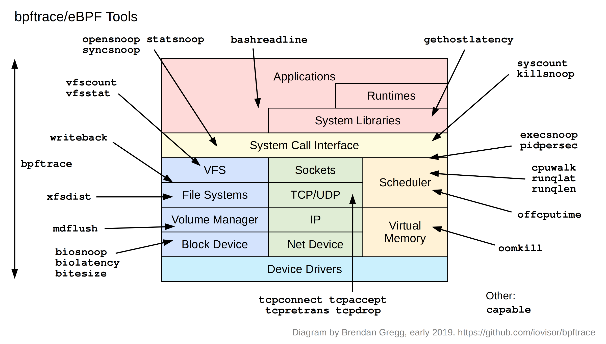

TL;DR — BCC (Part 7) gives you pre-made tools; bpftrace gives you a tiny awk-like language to write your own eBPF tracing in one line. When no ready tool fits your exact question, bpftrace answers it in seconds. This chapter teaches the language — probe syntax, filters, actions, built-in variables, and the map/aggregation functions that do in-kernel summarisation (count(), hist(), @ maps) — then walks the shipped tools on the diagram (opensnoop, biolatency, runqlat, tcpretrans, tcpdrop, oomkill, and more). By the end you can read and write bpftrace, not just run it.
What bpftrace is, and why it's different
BCC tools are excellent, but each is a fixed program answering a fixed question. Real investigations throw odd questions: "histogram the size argument to this specific function, but only for process X." No pre-made tool covers that. bpftrace is the answer — a high-level language, inspired by awk and DTrace, that compiles a one-line (or short multi-line) script into eBPF, loads it, aggregates in-kernel, and prints the result. You go from question to data in one command.
It sits one rung above BCC in convenience and one rung below in maximum programmability: for the vast majority of ad-hoc tracing, bpftrace is the right tool, and it's the one whose syntax shows up throughout this blog's eBPF examples. Learning its handful of concepts pays off forever, because they're the same concepts (probes, actions, maps) the whole eBPF ecosystem is built on.

The original — Brendan Gregg's "bpftrace/eBPF Tools" (github.com/bpftrace/bpftrace, early 2019). The simplified diagram below walks it box by box.
Fig 1 — bpftrace ships per-subsystem tools too, but its real power is the language on the left: write a probe for any layer in one line.
Anatomy of a bpftrace program
Every bpftrace program is one or more blocks of the form:
probe /filter/ { action }- probe — what event to hook (a kprobe, tracepoint, uprobe, the timer, etc.).
- filter (optional, in
/ /) — a condition; the action only runs if true. - action — what to do when it fires: print, record into a map, compute.
The classic first program:
# count syscalls by process name, print on Ctrl-C
bpftrace -e 'tracepoint:raw_syscalls:sys_enter { @[comm] = count(); }'That single line: hook the syscall-entry tracepoint; for each event, increment a map keyed by the process name (comm). On exit, bpftrace prints the map automatically. No file, no compile — that's the whole appeal.
Probe types
| Probe | Fires on |
|---|---|
kprobe:func / kretprobe:func | kernel function entry / return |
tracepoint:cat:event | a stable kernel tracepoint (preferred — survives upgrades) |
uprobe:/bin/x:func / uretprobe | user-space function entry / return |
usdt:/bin/x:probe | statically-defined app trace point |
profile:hz:99 / interval:s:1 | timer — sampling / periodic output |
software: / hardware: | software events / PMC hardware events |
BEGIN / END | program start / end (print headers, dump maps) |
Built-in variables & functions
| Built-in | Meaning |
|---|---|
pid, tid, comm | process id, thread id, process name |
nsecs | timestamp in nanoseconds (for measuring durations) |
arg0..argN | probe arguments; retval for return values |
kstack / ustack | kernel / user stack trace |
count(), sum(), avg(), min(), max() | aggregations into maps |
hist() / lhist() | power-of-2 / linear histograms — the killer feature |
@name[keys] | a map — in-kernel key/value store for aggregation |
printf() | formatted per-event output |
@ map plus hist() is what makes bpftrace powerful and cheap: aggregation happens in the kernel, so you ship a small histogram to user space instead of one event per occurrence. That's how you trace a hot path at low overhead — the same mechanism behind biolatency's histogram in our database post.One-liners that earn their keep
The fastest way to learn bpftrace is to read its famous one-liners. Each answers a real question:
# files opened, with process + filename
bpftrace -e 'tracepoint:syscalls:sys_enter_openat { printf("%s %s\n", comm, str(args->filename)); }'
# block I/O latency as a histogram (the biolatency core)
bpftrace -e 'kprobe:blk_account_io_start { @s[arg0]=nsecs }
kprobe:blk_account_io_done /@s[arg0]/ { @us=hist((nsecs-@s[arg0])/1000); delete(@s[arg0]); }'
# read sizes requested, as a histogram, for one process
bpftrace -e 'kprobe:vfs_read /comm=="postgres"/ { @ = hist(arg2); }'
# count kernel stacks leading to TCP retransmits (who/why)
bpftrace -e 'kprobe:tcp_retransmit_skb { @[ustack, comm] = count(); }'
# scheduler run-queue latency histogram
bpftrace -e 'tracepoint:sched:sched_wakeup { @qt[args->pid]=nsecs }
tracepoint:sched:sched_switch /@qt[args->next_pid]/ {
@us=hist((nsecs-@qt[args->next_pid])/1000); delete(@qt[args->next_pid]); }'Notice the pattern in the latency ones: timestamp on the start probe into a map keyed by an id, compute the delta on the matching end probe, drop into a hist(). That entry/return timing idiom is 80% of custom performance tracing — once it clicks, you can measure the latency of almost any kernel or user function.
The shipped tools
Like BCC, bpftrace ships ready-made tools (the .bt scripts) pinned across the diagram. They're the same investigations as Part 7, re-implemented as readable bpftrace you can crack open and modify.
| Layer | Tools |
|---|---|
| Apps / syscall | opensnoop, statsnoop, syncsnoop, execsnoop, killsnoop, syscount, bashreadline, gethostlatency |
| VFS / FS | vfscount, vfsstat, xfsdist, writeback, mdflush |
| Block | biosnoop, biolatency, bitesize |
| Network | tcpconnect, tcpaccept, tcpretrans, tcpdrop |
| Scheduler / CPU | runqlat, runqlen, cpuwalk, offcputime, pidpersec |
| Memory | oomkill |
| Other | capable |
Two worth singling out. tcpdrop traces packets the kernel drops (not just retransmits) with the stack that dropped them — it answers "why is the kernel discarding these packets?", a level deeper than tcpretrans. cpuwalk samples which CPU a process runs on over time, exposing whether a workload is bouncing across cores/NUMA nodes (a reason to pin it, per Part 4). Because each ships as a readable .bt file, the tool is the tutorial — cat $(which biolatency.bt) to see exactly how it works and tweak it.
bpftrace /usr/sbin/biolatency.bt # run a shipped tool
cat /usr/share/bpftrace/tools/tcpdrop.bt # read it to learn
bpftrace -l 'tracepoint:tcp:*' # list available probesbpftrace vs BCC — when to use which
| bpftrace | BCC | |
|---|---|---|
| Best for | ad-hoc one-liners, custom questions, quick scripts | complex, polished, repeatable tools |
| Language | concise awk-like DSL | Python/C — full programming |
| Speed to answer | seconds (one command) | more setup, more control |
| Custom UIs / args | limited | full (argparse, formatting) |
The practical rule from Brendan Gregg himself: reach for a bpftrace one-liner for a quick custom question; promote it to a BCC tool only if you need a robust, reusable, well-argument-parsed program. In day-to-day work that means bpftrace covers most investigations, and the BCC toolbox (Part 7) covers the standard ones. When a BCC tool fails to attach a kprobe on a newer kernel, the bpftrace tracepoint version is the reliable fallback (we hit exactly this in the database post).
Safety & overhead
Same eBPF guarantees as the rest of the stack: the verifier rejects anything that could crash or hang the kernel, so a broken script errors out rather than panicking the box. Overhead is low when you aggregate in-kernel (@ = hist(...), count()) and higher when you printf per event on a hot probe. Bound chatty scripts with a filter (/comm=="postgres"/), a duration, or a PID. Production-safe for the aggregating tools; targeted windows for the per-event ones.
Hands-on: write your own tracer in one line
The fastest way to learn bpftrace is to run its one-liners and read the output. Each below answers a real question — command, output, decision. All need root.
Which process makes the most syscalls?
sudo bpftrace -e 'tracepoint:raw_syscalls:sys_enter { @[comm] = count(); }'@[postgres]: 184203
@[node]: 990210 <- node dominates syscallsRead it: node is making 5× the syscalls of the DB. Do this: drill into which syscall with the next one-liner; a flood usually means chatty I/O or polling.
Histogram a function's latency (the timing idiom)
# vfs_read latency, in microseconds, as a histogram
sudo bpftrace -e 'kprobe:vfs_read { @s[tid]=nsecs }
kretprobe:vfs_read /@s[tid]/ { @us=hist((nsecs-@s[tid])/1000); delete(@s[tid]); }'@us:
[8, 16) 9203 |@@@@@@@@@@@@@@@@@@@@@@@@@@@@|
[16K, 32K) 140 |@ | <- 16-32 ms tailRead it: timestamp-on-entry → delta-on-return → hist() is 80% of custom tracing. Here reads are mostly fast with a small ms-scale tail. Do this: add a /comm=="postgres"/ filter to scope it to the DB.
What's behind the TCP retransmits?
sudo bpftrace -e 'kprobe:tcp_retransmit_skb { @[comm] = count(); }'@[postgres]: 47 <- retransmits on DB trafficDo this: non-zero and climbing on a DB process = packet loss on replication/query sockets; check the NIC and link (Part 2/4).
Read sizes a process requests
sudo bpftrace -e 'kprobe:vfs_read /comm=="postgres"/ { @ = hist(arg2); }'@:
[8K, 16K) 8200 |@@@@@@@@@@@@@@@@@@@@@@@@@@| <- mostly 8K page reads
[256K, 512K) 12 | |Read it: Postgres reading in 8K pages — expected. A surprise of tiny reads would hint at a bad access pattern or missing index.
Run a shipped tool, then read it to learn
sudo bpftrace /usr/sbin/biolatency.bt # run it
cat /usr/share/bpftrace/tools/tcpdrop.bt # learn how it works
sudo bpftrace -l 'tracepoint:tcp:*' # list probes you can hookDo this: the shipped .bt tools are readable source — copy one, tweak the filter or the key, and you've written a custom tool in minutes. tcpdrop goes deeper than tcpretrans: it shows packets the kernel drops with the stack that dropped them.
Takeaways
- bpftrace = write your own tool in one line. When no pre-made tool fits, the DSL answers the exact question in seconds.
- Three concepts run everything: probes (what to hook), filters (when), actions (what to do) — plus
@maps +hist()for cheap in-kernel aggregation. - The timing idiom — timestamp on entry into a keyed map, delta on return into a
hist()— measures the latency of almost any function. - Shipped
.bttools are readable.catone to learn;tcpdropandcpuwalkgo deeper than their BCC cousins. - bpftrace for ad-hoc, BCC for polished. And bpftrace's tracepoint tools are the fallback when BCC kprobes won't attach.
References
- bpftrace — the language, tools, and reference (source of this diagram).
- bpftrace reference guide — every probe, builtin, function.
- bpftrace one-liner cheat sheet — learn by reading one-liners.
Extra reads
- eBPF for Database Troubleshooting — bpftrace one-liners against a live PostgreSQL.
- Part 7 — bcc/BPF Tools — the polished pre-made toolbox.
- Part 9 — BPF Performance Tools (book) — the full catalogue both toolkits draw from.
Built from Brendan Gregg's "bpftrace/eBPF Tools" diagram (github.com/bpftrace/bpftrace, 2019). Syntax shown targets recent bpftrace; argument access (args->field) and some builtins vary by version. Aggregate in-kernel for low overhead; bound per-event scripts by filter/duration.